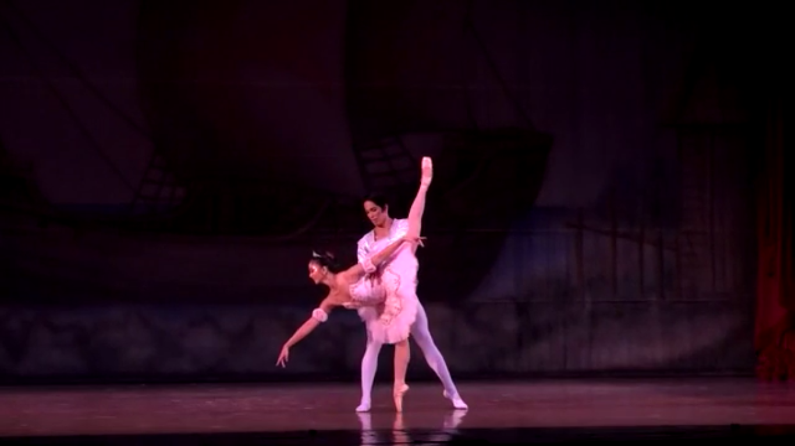
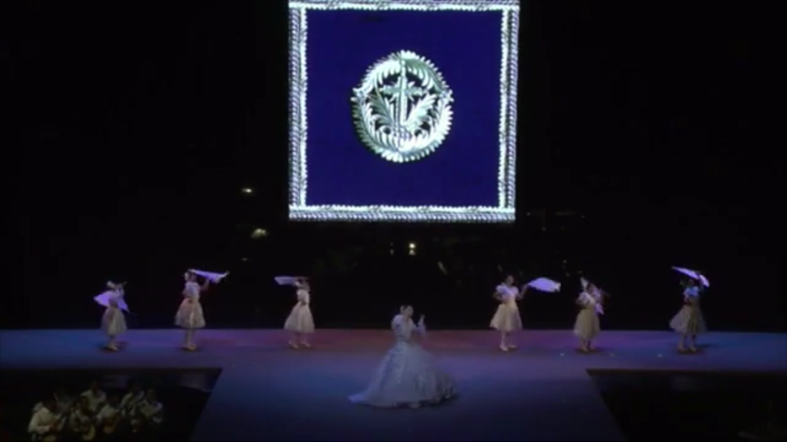
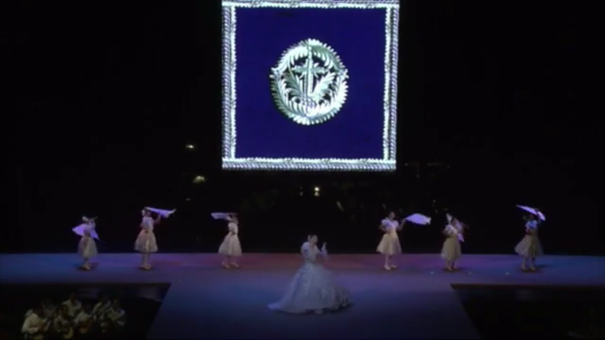

Video Showing



The first one is a ballet type of dance and the four elements of dance is already present which is the body, energy, space and time so changing levels slowly then kicking your legs out quickly is an example of moving your space in a specific time, then using another body part with high energy.
The second one is a type of Philippine folk dance. The elements of dance present here is space, dynamics and rhythm so space have six aspect namely floor plan, direction, focus, level, dimension, and contour. Dynamics have five aspect namely swinging movement, sustained movement, percussive movement, suspend movement and the vibratory movement and the last one is rhythm that has measure, tempo, underlying beat, phrase, accent and intensity.